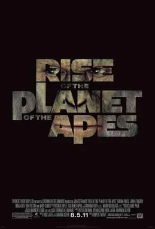

The genetics
The film's premise is a gene-therapy-like treatment that goes wrong. ALZ-112 is a virus-based drug designed to repair the brain in Alzheimer's disease; in apes it boosts intelligence, and its effects are passed from Bright Eyes to her son Caesar. Will Rodman is a sympathetic scientist, motivated by his father's illness, but he cuts corners by testing the drug on his father and raising Caesar at home, while his boss pushes the more powerful ALZ-113 into further trials despite the risks. The result is both the rise of intelligent apes and a pandemic lethal to humans, setting up the later films. The film raises questions about animal experimentation and corporate pressure on research. Modified viruses are in fact one of the main ways of delivering genes in real gene therapy, but no treatment can create human-level intelligence in apes, and Alzheimer's disease still has no cure.
The story
In San Francisco, scientist Will Rodman is testing ALZ-112, a virus-based drug intended to cure Alzheimer's disease, on chimpanzees at the biotech company Gen-Sys. The drug greatly increases the intelligence of a female chimpanzee, but she is shot during a rampage and the project is closed. Will secretly takes home her newborn son, Caesar, who has inherited the drug's effects, and raises him as he grows into a highly intelligent ape. Will also treats his own father, who has Alzheimer's, and the drug restores his mind until his immune system fights it off. After Caesar attacks a neighbour to defend Will's father, he is sent to a brutal primate shelter, where he becomes the apes' leader. Gen-Sys develops a stronger gaseous version, ALZ-113, which proves lethal to humans. Caesar steals it, makes the other apes intelligent and leads them to freedom across the Golden Gate Bridge, while an infected man unknowingly spreads ALZ-113 around the world.